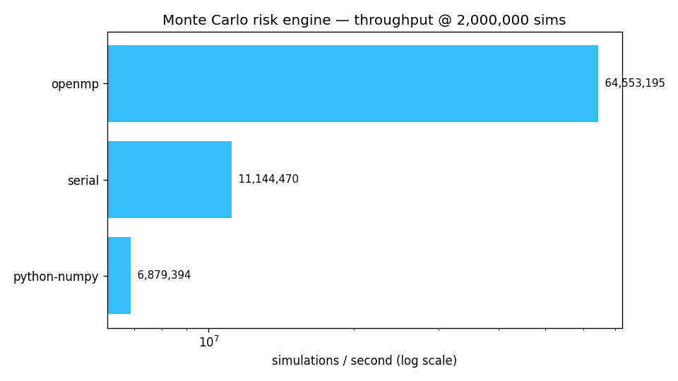

A multi-backend Monte Carlo engine that prices a portfolio of correlated assets under geometric Brownian motion and estimates Value-at-Risk and Expected Shortfall — with Serial, OpenMP and CUDA backends sharing one model for guaranteed numerical consistency.
Benchmarked on a 16-thread CPU at 2,000,000 simulations. All backends agree on VaR/CVaR to within Monte Carlo noise — the proof the parallelism didn't change the math.

| Backend | Threads | sims/sec | Speedup | VaR 95% | CVaR 95% |
|---|---|---|---|---|---|
| python-numpy | 1 | 6.9M | 1.0× | 641.6 | 837.1 |
| serial (C) | 1 | 11.1M | 1.6× | 639.7 | 835.1 |
| openmp (C) | 16 | 64.6M | 9.4× | 641.2 | 835.5 |
⚙️ The CUDA backend (cuRAND Philox + Cholesky in constant
memory + grid-stride loop) is included and fully documented, but requires an
NVIDIA GPU + nvcc to build/run — so it is not benchmarked on this
AMD machine. On NVIDIA hardware it scales the same model onto thousands of threads.
Each asset follows geometric Brownian motion; a Cholesky factor of the correlation matrix turns i.i.d. normals into correlated shocks.
Simulate terminal portfolio loss across millions of paths; VaR is the tail quantile, CVaR the mean beyond it.
The single-path simulation is one inline function reused by every backend — they differ only in how they parallelize the loop.
xoshiro256** per CPU thread, Philox per CUDA thread, PCG64 in NumPy — three RNGs, one answer, model validated.
# CPU backends (build anywhere with gcc)
make # builds mc_serial + mc_openmp
./mc_openmp 5000000 # 5M sims -> JSON with VaR/CVaR + throughput
# benchmark every available backend + chart
python scripts/benchmark.py
# GPU backend (NVIDIA only)
make cuda # nvcc -> mc_cuda{"backend":"openmp","n_sims":5000000,"threads":16,
"sims_per_sec":74031410,"V0":5460.0,"VaR":640.57,"CVaR":835.30}